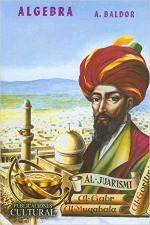
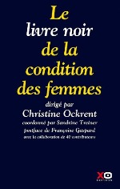
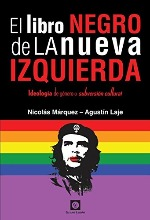
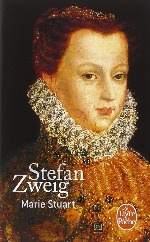

"Reading was my freedom and my comfort my consolation, my favorite stimulant: reading for the pure pleasure of reading, for this beautiful calm that surrounds you when you hear in your head the words of an author ringing ... " PAUL AUSTER
"Reading was my freedom and my comfort my consolation, my favorite stimulant: reading for the pure pleasure of reading, for this beautiful calm that surrounds you when you hear in your head the words of an author ringing ... " PAUL AUSTER
|
Select at |
| COVER | summary and/or description | Buy |
| 
AlgebraAurelio Baldor |
The book contains some preliminaries, 39 chapters and an appendix. The chapters, in order, are as follows: addition, subtraction, grouping of signs, multiplication, division, remarkable products and quotients, residual theorem, first degree whole equations with an unknown factor, maximum common divisor, minimum common multiple , fractions Algebraic reduction of fractions, operations with algebraic fractions, first degree fractional numerical equations with an incognito, first degree literal equations with an incognito, problems with first degree fractional equations, mobile problems, formulas, inequalities-inequalities, functions, Graphical representation of functions, Graphical-practical applications, Indeterminate equations, Simultaneous first degree equations with two unknowns, Simultaneous first degree equations with three or more unknowns, Problems solved by simultaneous equations, Elementary study of coordination theory s, Empowerment, Theory of exp Onents, radicals, imaginary quantities, second degree equations with an incognito, problems solved by second degree equations - light problem, theory of second equation and also of degrees - study of the trinome of the second degree, binomial equations and Trinomies, progressions, logarithms, compound interest-depreciation-taxation... Read all Label: |
|
|
CandideVoltaire |
The castle of the baron of thunder-ten-tronckh in Germany. Candide, a young man whose birth is
suspect, without wealth, is the pupil of the philosopher Pangloss, optimist who believes in the perfection of the world.
Candide falls in love with Cunégonde, the baron's daughter, which causes him to be ousted from the Castle. Candid is
to join the Bulgarian army. He tries to escape and is whipped for desertion. War between the Bulgarians
and the Arabs. Candide hides during the battle, then runs away. Destitute and hungry, he is forced
to beg for food. Jacques, a good Anabaptist, feeds him, gives him accommodation and a job.
meets Pangloss, who suffers from syphilis and tells that Cunégonde Candide was raped. Jacques pays
to cure Pangloss. Jacques, Candide and Pangloss leave for Lisbon .... Read All Label: |
|
| 
The Black Book Of The Condition of WomenChristine Ockrent |
“Women are their own hope, they can only count on themselves to change society. Every time we advance our rights for all, humanity takes a step towards a more just world. Through this book, this photograph of the condition of women today, each of us has the opportunity to learn what we do not know, to discover what we cannot or do not want to see, and to participate in the fight for a better world. ”Christine Ockrent. The Black Book on the Status of Women offers us, for the first time, a photograph of the status of women in the world today. In preamble to its Declaration of 1993, the UN proclaims the urgency of the application to women of the rights and principles of the human race: SECURITY, INTEGRITY, FREEDOM, DIGNITY, EQUALITY. Five words to sum up what should be guaranteed to women at the start of the third millennium... Read All Label: |
|
| 
The Black Book of The New leftAgustin Laje and Nicolas Marquez |
After the formal fall of the Soviet Union in 1992, many sectors of the free world rested on that triumphalism that gave the feeling that the collectivist utopia had lost forever. But a few years later, embracing new flags and reinventing his speech, the so-called neo-communism (or cultural progressivism) not only came to dominate the political agenda but largely the Western mentality. The old socialist principles of class struggle, dialectical materialism, proletarian revolution or guerrilla violence, were now replaced by a rare intellectual intake promoting "ecological indigenism," selective "right-humanism," "legal guarantee," and above all the things, for what is called "gender ideology", luck of pornomarxism of pansexual dye, promoter of radical feminism, ideological homosexuality, pedophilia as "alternative", abortion as "free disposition of the body" and all kinds of self-destructive habits as a form of rebellion in the face of «the hetero-capitalist tradition» of the West .... Read All Label: |
|
| 
Mary StuartStefan Zweig |
Daughter of Marie de Guise and Jacques V of Scotland, Marie became Queen of Scotland after the death of her father, when she was only six days old. The management of the kingdom is entrusted to regents, like his mother Marie de Guise as well as his cousin after the death of the regent; the queen grew up in France. In 1558, she married the future King François II, who rose to the throne the following year, thus renewing the Auld Alliance between the two countries. He died prematurely in 1560 and Marie Stuart returned to Scotland. Catholic queen in a country that has become Protestant, Marie is treated with distrust, even if she leads a moderate policy at first. Four years after her return, she married her second cousin, Lord Darnley, for a second wedding. The marriage was not happy despite the birth of a son, the future Jacques VI of Scotland and I of England... Read All Label: |
New books are already available on our site!